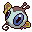
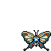
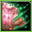
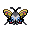
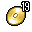

Pokédex / #267

Beautifly #267
BugFlying
Vibrantly patterned wings are its prominent feature. It sucks sweet flower nectar with its long mouth.
Generation 3 · Hoenn

Stats
| Attack | 70 | |
|---|---|---|
| Defense | 50 | |
| Sp. Atk | 100 | |
| Sp. Def | 50 |
In the wild
| Wild level | 30–40 |
|---|---|
| HP | 60 |
| Experience | 12 |
| Egg groups | Bug |
Evolution
- Evolves from Silcoon at level 10.
Moves
| Level | Move | Type | Category | Power | Energy | Cooldown | Effect | |
|---|---|---|---|---|---|---|---|---|
| 1 | Tackle | Normal | Physical | 15 | 15 | 1s | Tackle is one of the most common and basic moves a Pokemon learns. It deals damage with no additional effects. | |
| 1 | Gust | Flying | Special | 40 | 40 | 9s | Gust deals damage and has no secondary effect. | |
| 1 | Harden | Normal | Status | – | 70 | 60s | Harden raises the user's Defense by one stage. | |
| 1 | String Shot | Normal | Status | 1 | 15 | 8s | String Shot lowers the target's Speed by one stage. | |
| 5 | Poison Sting | Poison | Physical | 15 | 20 | 5s | Poison Sting inflicts damage and has a 30% chance of poisoning the target. | |
| 12 | Absorb | Grass | Special | 20 | 35 | 5s | Absorb deals damage and the user will recover 50% of the HP drained. | |
| 15 | Stun Spore | Normal | Status | – | 55 | 10s | Stun Spore paralyzes the target. | |
| 15 | Bug Bite | Bug | Physical | 60 | 60 | 9s | Bug Bite deals damage and has no secondary effect. | |
| 17 | Morning Sun | Normal | Status | – | 150 | 120s | The user restores half of its HP, or all of it in daylight. | |
| 20 | Air Cutter | Flying | Special | 60 | 70 | 13s | Air Cutter deals damage and has an increased critical hit ratio. | |
| 22 |  | Mega Drain | Grass | Special | 40 | 65 | 12s | Mega Drain inflicts damage, and 50% of the damage dealt to the target is restored to the user. The amount of HP recovered is always rounded down. |
| 25 | Silver Wind | Bug | Special | 60 | 70 | 14s | Silver Wind deals damage and has a 10% chance of raising the user's Attack, Defense, Special Attack, Special Defense and Speed by one stage each. | |
| 30 | Whirlwind | Flying | Status | – | 80 | 30s | The user whips up a gust that blows the Pokemon in front of it back. | |
| 32 | Giga Drain | Grass | Special | 75 | 95 | 12s | Giga Drain deals damage and the user will recover 50% of the HP drained. | |
| 35 | Bug Buzz | Bug | Special | 90 | 100 | 21s | Bug Buzz deals damage and has a 10% chance of lowering the target's Special Defense by one stage. | |
| 37 | Rage | Normal | Physical | 20 | 100 | 15s | Rage inflicts damage, hitting the target 2-5 times per use. | |
| 40 | Quiver Dance | Bug | Status | – | 70 | 60s | Quiver Dance raises the user's Special Attack, Special Defense and Speed by one stage each. |
Field abilities
FlashFind
Special abilities
Swarm
Egg moves
None
Technical machines
Aerial AceBideCurseDouble EdgeDouble TeamEnergy BallGiga DrainHyper BeamMimicProtectPsychicRageRestSafeguardShadow BallSnoreSolar BeamSubstituteSwiftToxic
Drops
| Item | Amount | Chance | |
|---|---|---|---|
| bamboo leaves | 1 | 100% | |
| bamboo stick | 1 | 100% | |
| pot of moss mug | 1 | 35.7% | |
| acorn | 1 | 33.3% | |
| insect antenna | 1 | 16.7% | |
| sample of sand wasp honey | 1 | 12.5% | |
| petrified goo | 1 | 12.5% | |
| red apple | 1–5 | 5% | |
 | beautifly doll | 1 | 0.1% |
| Insect Plate | 1 | 0.025% | |
| Sky Plate | 1 | 0.025% | |
| held sharp beak | 1 | 0.01% | |
| held silver powder | 1 | 0.01% | |
 | TM 19 | 1 | 0.005% |
| TM 20 | 1 | 0.005% | |
| TM 56 | 1 | 0.005% |